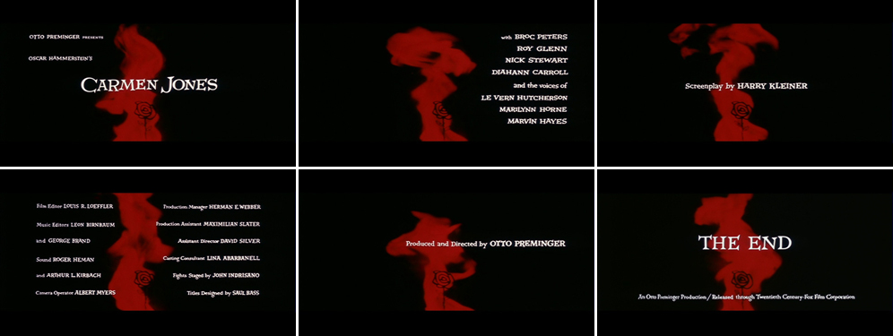

About Saul Bass
This essay will examine the work of Saul Bass an American Graphic designer, born in New York in the 1920s. Bass worked mainly with advertising and marketing, but later began his career in the film making industry, creating lots of title sequences for numerous films, such as; The man with the Golden arm and the anatomy of a murder. Bass was also very influential, within the advertising industry, designing many well-known brand logos known today e.g. Kleenex. He often took a very simplistic, modern approach when creating his designs.
How Saul Bass has changed the face of the movie sequence
Bass produced various logos which are still used today, many of which followed the gestalt principles, some examples include; the Girl Scouts, AT &T and Quakers logos. Bass has carefully used geometric shapes to create these motifs, whilst experimenting with closure and proximity. For example, the AT &T logo Figure 1, was created in 1969, he limited the design to only horizontal lines however, to the human eye we connect all the lines to produce a blue circle.
For the Quaker logo and the Girl Scouts logo, Figure 2 and Figure 4, Bass has used curved shapes to try and recreate images of people. The orginial quakers logo was drawn by Jim Nash in 1856, Figure 3. Figure 3, We can see that the original is in black and white and is very detailed, compared to Bass’ vibrant blue, modernised, simplifeid version. Figure 2 is a lot more modern than Nashs’ logo in figure 3. The Girl scouts is an American youth orgainisation for girls to experience adventure and leadarship. The logo features the outline of 3 women portraying unity and confidence in Bass’ simplistic approach. As well as branding, Bass changed the face of movie sequence. Before Bass, titles and credits were simply just lists which many people neglected. Bass wanted to change this, as he thought it was of great importance and the main reason for a title sequence is to introduce the name of the Film. But he also wanted to focus on the directors, screenwriters, producers and crew behind the film ,so he wanted to create an artistic statement out of each films title sequence he created. Bass believed that if you grasp the audience’s attention from the very beginning they will be intrigued and want to keep watching. (Bass, 2014, pg.4) This is apparent when Bass (2015) stated: “I had felt for some time that audience involvement with a film should begin with its first frame.”
He created his first film poster in 1954, for American film “Carmen Jones”, as he was contacted by director Otto Preminger. After his poster creation was published, he was then asked to design the film’s title credits. This was when Bass realised that he wanted to do more with the titles and credits, than just an official list of the legal and copyright information of everyone who featured within the movie, the way every other movie of this time was typically created. So, he decided to transform the way in which the credits where presented, by adding movement to it. Within this title sequence, Figure 5, Bass used a very dark colour scheme, a black background which he placed an animated red flame in the center and if you look closely inside the flame there is an illustration of a rose, to express the symbols of love, passion and betrayal within the movie. Bass has creatively matched the music to the motion of the flame, so as the music gets shaper the flame becomes more violent.
In 1955, Bass created another title sequence for director Otto Preminger for his film “The Man with the Golden Arm”. See Figure 6. This was one of his creations for a movie about a man living with a drug addiction, he used a rough disformed arm, to try and portray the disjointed feeling you have living as a drug addict. In this title sequence, Bass used contrasting colours for affect, he made the disjointed arm white on a black background to make it stand out. He also designed it so that the arm isn’t connect to the rest of the body, this is the way the addict feels about losing part of themselves as their personality changes, due to their addiction. The arm almost looks scared which resembles how they are feeling like they can’t escape from their problem.
Another well known title sequence created by Bass was for the movie “Vertigo.” Bass was approached by American motion-picture director, Alfred Hitchcock to create this title sequence, Figure 7. Bass immediately responded as he admired Hitchcock’s work and was eager to work with him in order to create a remarkable film. This is a film about an ex-police officer who suffers from acrophobia, he is hired to investigate the strange behavior of an old friends’ wife, who they believe is suicidal. However, after months of investigating he falls in love with her. (A life in film & design, 2011) In this title sequence, Bass has carefully tried to capture the elements of thriller and romance within the movie. He begins by showing close ups of the main characters facial features, and artistically uses typography as the main feature of each cut. Then as we move closer to the eye, he has added a red wash, which conveys a sense of danger, also to enhance this effect Bass adds a spinning spiral creating a sense of dizziness, to keep the audience intrigued. I particularly liked the way in which they have carefully added the music to compliment the rotating spiral, and how the music gets more dramatic, as the spiral expands.
Figure 8 Anatomy of a Murder, 1959 (Future Publishing Limited, 2012) Another one of Bass’ big debuts, was the movie sequence he created for the film, “Anatomy of a murder”. The beginning scene features individual segments which make up a human body. Although these body parts aren’t connected, they are placed in such a way that would suggest to the audience it resembles a crime scene. As we continue to watch it some of the body parts move off screen, then we see each body part individually, I believe this was deliberate as, in a crime scene the investigator examines the victim very carefully, to try and solve the investigation. The arms also move on and off the screen as if it is a victim trying to escape because they are trapped. Bass also used a very dull colour pallet to create a sense of eeriness.
How Saul Bass changed the face of movie sequence
Saul Bass’ work has influenced many modern title sequences today for example, “Monsters Inc.” This Disney title sequence, Figure 9, was created by American designer Geefwee Boedoe in 2001. It is a very vibrant opening with geometric shapes dancing around the screen. The main idea behind this sequence was that the door is the key feature. It plays a huge role within the movie giving the audience a glimpse of what is to come. Boedoe has added cut out shapes and merged them to represent a door. This title sequence is very upbeat and lively making the viewers want to watch on.
Another film inspired by Bass’work was “Catch Me If You Can.” The film was set during the 1960’s which was when Saul Bass became very popular, therefore taking influence from him at this time seemed the logical thing to do. This sequence does not only capture the look of some of Bass’ work, by using a very modern approach, but also uses the dark colour scheme just like Bass’ work, however they have added an accent colour to each cut for contrast, to make it more appealing. This title sequence was created by French duo Olivier Kuntzel and Florence Deygas. They believed to design an astonishing title sequence you have to find an idea linked with the music. So just like Bass did with the spiral in the Vertigo film, Kuntzel and Deygas added symbols and geometric shapes to match the music.
Conclusion
To conclude, Saul Bass created title sequences for many recognized movies and has greatly influenced film title sequence today. He wanted to change the way in which they were presented as he believed that the audience should enjoy the film right from the opening scene, as before Bass title sequences were just simple lists stating all the copyright laws and crew members. He wanted the audience’s involvement from the first frame.